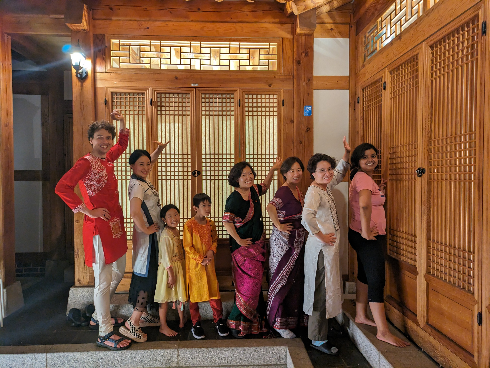
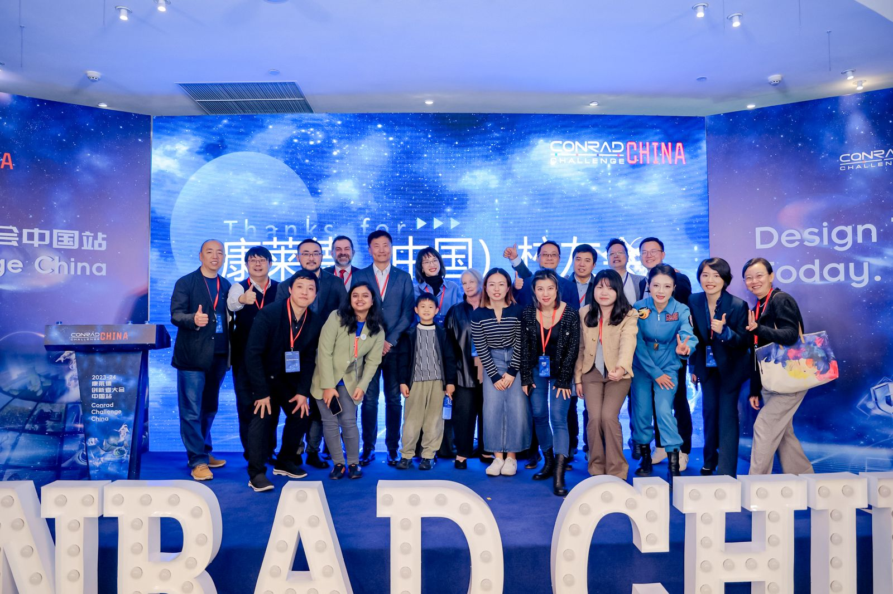
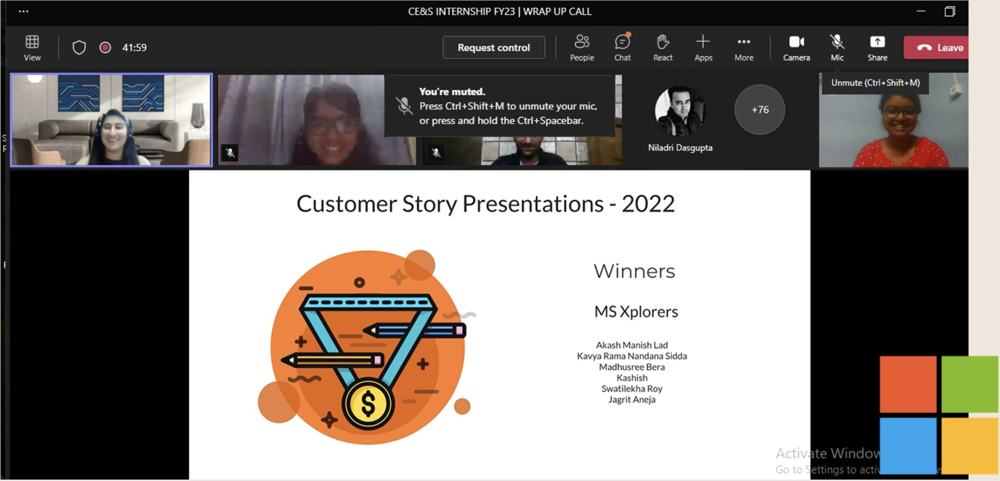
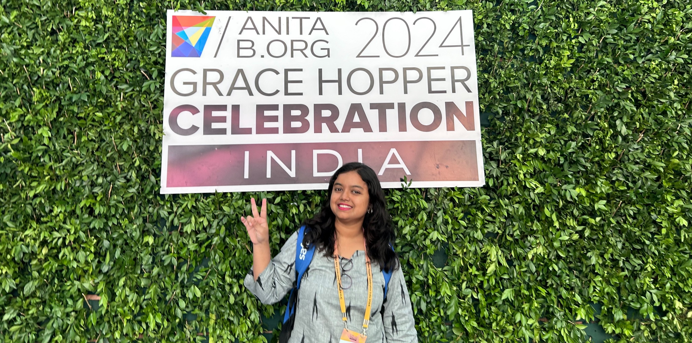

Hello! নমস্কার।
I'm Swatilekha.
Storyteller. Techie. Operations Nerd. Community Leader. Content Creator.
And, whimsy-maker. ✨
I am passionate about tech for social good, storytelling, community-driven leadership, and acts of service. I love connecting with people from diverse experiences: the haymakers, rule-breakers.
I’m currently focused on social impact and community volunteering across education, social good, and DE&I. Organizations I’m actively involved with include Conrad Challenge (NASA ecosystem), AnitaB.org, Rewriting the Code, and Horn Entrepreneurship. I also create content on LinkedIn, YouTube, and Instagram.
Previously, I worked as the Growth & Operations Lead and first full-time employee at a Silicon Valley-based non-profit for 4 years. I hold a B.Tech in Computer Science & Engineering. My literary works include 40+ international publications, a short film, a poetry series, and a Ukrainian cine-book theatre adaptation.
Jane of all trades, master of very few.
Professional Journey
Growth & Operations Lead, Applied Computing Foundation
- Enabled youth-led, sustainability-focused tech innovation by designing immersive learning experiences, mentoring educators, and helping grow a 500+ strong global learning community.
- As the first full-time employee, scaled day-to-day operations from 0 → 1, building systems for class management, training, and billing so the organization could grow sustainably; later, led the operational transition from Applied Computing Foundation to LettuceBuild, coordinating workflows, tools, and teams through company incorporation.
- Built scalable internal systems, including student progress tracking, LMS, customer onboarding, CRM, and process documentation, reducing single-point dependencies.
- Mentored young builders across coding, entrepreneurship, and science innovation, supporting student teams that went on to gain recognition through global entrepreneurship competitions.
- Spearheaded community engagement initiatives, while also leading the company’s website and social media.

Creative Journey
Poems From Chapter 25
Oct 2025 – Jan 2026- A 25-day self-portrait video poetry series about the quiet storms and soft sunshines of our mid-twenties: feeling behind, feeling ahead, and finally learning to feel enough.
- 25 days. 25 poems. 25 unsaid aspects of quarter-life cr...creativity.
- Explores themes such as anxiety, happiness, family, death, nostalgia, and more — through the critical lens of turning 25.
Social Impact Journey
Conrad Challenge (Global & China Chapters) - Judge
- Volunteer Judge at Conrad Challenge, hosted by Space Center Houston (NASA ecosystem) and presented by Equinor, across the Global and China chapters, contributing to one of the world’s leading youth innovation and entrepreneurship programs.
- Served in progressive leadership roles including Innovation Judge, Lead Judge, Special Assignment Judge, Innovation Summit Judge, and Expert Judge, evaluating innovations across Health & Nutrition, Energy & Environment, and Cyber-Technology & Security.
- Evaluated 89+ student teams across written and live pitching rounds, provided detailed written feedback, and helped select category finalists and winning teams.
- Invited to serve in person at the Conrad Challenge Innovation Summit (Houston) and Conrad Challenge China Innovation Summit (Shanghai), including selection for 1 of only 7 global judge seats at the Houston summit, while also overseeing reportee judges and supporting quality review across judging panels.

Bright Spots
Microsoft

- Customer Story Presentation Winner
- Aspireathon Second Prize Winner
- Microsoft Fix-a-thon Winner
- 'Best Use of Azure for Social Good Sponsored by Microsoft' Winner, Athena Hacks
Cine Books
- My story 'Elizabeth' won the 2018 Jury’s Choice Award, and received the second-highest number of votes in the Most Popular Choice category.
- Adapted into a screenplay and photo story, directed and visualized by photographer Marta Syrko.
AnitaB.org

- Grace Hopper Celebration Invited Speaker
- Grace Hopper Celebration India Ambassador, Volunteer Co-Lead
- Grace Hopper Celebration India Scholar (In-person)
- Grace Hopper Celebration Scholar (Virtual)
Fun Fact: My name combines “Swati,” the Sanskrit name of a constellation, and “Lekha,” which means writing in Bengali.
My longest pen-pal once interpreted it as “written in the stars.” 🌟
A girl can dream.